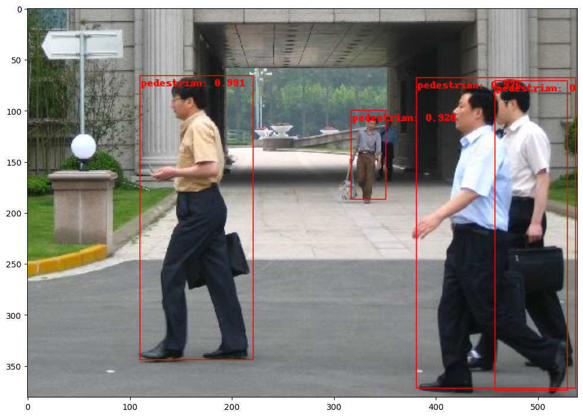

import torch
from torchvision.models.resnet import ResNet, Bottleneck, ResNet101_Weights
def resnet_101():
resnet = ResNet(block=Bottleneck, layers=[3, 4, 23, 3])
resnet.load_state_dict(ResNet101_Weights.DEFAULT.get_state_dict(progress=True))
return resnet
resnet = resnet_101()in this post I’ll be using pytorch’s FX graph mode quantization to quantize an R-CNN. in the previous post, I used eager mode quantization which resulted in model compression as well as latency gains compared to the same model on CPU. there are significant differences between the two quantization methods and each has pros and cons. so here I will touch on those differences as well as demonstrate how to quantize using FX graph mode.
at the time of writing this FX graph mode quantization is still a prototype feature. this means that it’s not as mature as eager mode which is a beta feature, although there does appear to be more effort on graphfx and it’s even encouraged over eager mode for first time users.
one major difference is that FX graph requires the network to be symbolically traceable. this requirement can result in hacky modifications to code in the network that would otherwise be unnecessary and users have complained about this complained about this.
according to documentation, the biggest advantages of FX graph mode quantization are:
- module fusion occurs automatically, something that could otherwise be tedious or error prone depending upon the complexity and size of your network
- functionals and torch ops also get converted automagically. in this case that means no need to modify the bottleneck block to use float functional as done in the last post
- no requirement to insert quant/dequant stubs in the network which means you can avoid creating those additional wrapper classes
with that out of the way, let’s dive into FX graph and QAT. as before, we’ll start with creating the resnet backbone but without having to modify the bottleneck to use float functional operator.
at this point, the resnet is fully traceable. tracing it with an example input will return a ScriptModule which can be used to get a representation of graph’s forward method.
traced_module = torch.jit.trace(resnet, torch.rand(1, 3, 200, 200))
print(traced_module.code)def forward(self,
x: Tensor) -> Tensor:
fc = self.fc
avgpool = self.avgpool
layer4 = self.layer4
layer3 = self.layer3
layer2 = self.layer2
layer1 = self.layer1
maxpool = self.maxpool
relu = self.relu
bn1 = self.bn1
conv1 = self.conv1
_0 = (relu).forward((bn1).forward((conv1).forward(x, ), ), )
_1 = (layer1).forward((maxpool).forward(_0, ), )
_2 = (layer3).forward((layer2).forward(_1, ), )
_3 = (avgpool).forward((layer4).forward(_2, ), )
input = torch.flatten(_3, 1)
return (fc).forward(input, )
same as the eager mode preparation, the next step is to use torchvision’s helper method IntermediateLayerGetter to extract layer outputs from the resnet to feed to the FPN.
from torchvision.models._utils import IntermediateLayerGetter
returned_layers = [1, 2, 3, 4]
return_layers = {f"layer{k}": str(v) for v, k in enumerate(returned_layers)}
resnet_layers = IntermediateLayerGetter(resnet, return_layers=return_layers)the result of the layer getter is a module dict which returns an ordered dict from its forward method. if we attempt to trace using strict mode, JIT will complain because of the mutable output type
AttributeError
...
AttributeError: expected a dictionary of (method_name, input) pairsthis can be ignored if we “are sure that the container you are using in your problem is a constant structure and does not get used as control flow (if, for) conditions.” since we know that the output won’t change we can safely ignore this and set strict=False. note that this isn’t necessary for QAT preparation but it’s helpful to know apriori if the parts of the model that we intend to quantize are indeed traceable.
traced_module = torch.jit.trace(resnet_layers, torch.rand(1, 3, 200, 200), strict=False)
print(traced_module.code)def forward(self,
x: Tensor) -> Dict[str, Tensor]:
layer4 = self.layer4
layer3 = self.layer3
layer2 = self.layer2
layer1 = self.layer1
maxpool = self.maxpool
relu = self.relu
bn1 = self.bn1
conv1 = self.conv1
_0 = (relu).forward((bn1).forward((conv1).forward(x, ), ), )
_1 = (layer1).forward((maxpool).forward(_0, ), )
_2 = (layer2).forward(_1, )
_3 = (layer3).forward(_2, )
_4 = {"0": _1, "1": _2, "2": _3, "3": (layer4).forward(_3, )}
return _4
as before, create the backbone with FPN, however this time without any modifications. after this, the module can be traced. because the output is a mutable type (ordered dict) but it’s structure will not change, strict mode needs to be set to false. note that if you don’t, there is a slightly different error (shown below) but the reason is the same.
RuntimeError: Encountering a dict at the output of the tracer might cause the trace to be incorrect, this is only valid if the container structure does not change based on the module's inputs. Consider using a constant container instead (e.g. for `list`, use a `tuple` instead. for `dict`, use a `NamedTuple` instead). If you absolutely need this and know the side effects, pass strict=False to trace() to allow this behavior.from torchvision.models.detection.backbone_utils import BackboneWithFPN
in_channels_stage2 = resnet.inplanes // 8
in_channels_list = [in_channels_stage2 * 2 ** (i - 1) for i in returned_layers]
out_channels = 256
returned_layers = [1, 2, 3, 4]
return_layers = {f"layer{k}": str(v) for v, k in enumerate(returned_layers)}
bb_fpn = BackboneWithFPN(
backbone=resnet,
return_layers=return_layers,
in_channels_list=in_channels_list,
out_channels=out_channels
)traced_module = torch.jit.trace(bb_fpn, torch.rand(1, 3, 200, 200), strict=False)
print(traced_module.code)def forward(self,
x: Tensor) -> Dict[str, Tensor]:
fpn = self.fpn
body = self.body
_0, _1, _2, _3, = (body).forward(x, )
_4, _5, _6, _7, _8, = (fpn).forward(_0, _1, _2, _3, )
_9 = {"0": _4, "1": _5, "2": _6, "3": _7, "pool": _8}
return _9
now that we’ve verified the backbone with FPN is indeed traceable, we can create the R-CNN and prepare the model for QAT. during preparation, FX graph mode will automatically insert observers and fuse modules. the returned model is also now graph module.
GraphModule(
(activation_post_process_0): HistogramObserver(min_val=inf, max_val=-inf)
(body): Module(
(conv1): ConvBnReLU2d(
3, 64, kernel_size=(7, 7), stride=(2, 2), padding=(3, 3), bias=False
(bn): BatchNorm2d(64, eps=1e-05, momentum=0.1, affine=True, track_running_stats=True)
(weight_fake_quant): PerChannelMinMaxObserver(min_val=tensor([]), max_val=tensor([]))
)
(maxpool): MaxPool2d(kernel_size=3, stride=2, padding=1, dilation=1, ceil_mode=False)
(layer1): Module(
(0): Module(
(conv1): ConvBnReLU2d(
64, 64, kernel_size=(1, 1), stride=(1, 1), bias=False
(bn): BatchNorm2d(64, eps=1e-05, momentum=0.1, affine=True, track_running_stats=True)
(weight_fake_quant): PerChannelMinMaxObserver(min_val=tensor([]), max_val=tensor([]))
)
(conv2): ConvBnReLU2d(
64, 64, kernel_size=(3, 3), stride=(1, 1), padding=(1, 1), bias=False
(bn): BatchNorm2d(64, eps=1e-05, momentum=0.1, affine=True, track_running_stats=True)
(weight_fake_quant): PerChannelMinMaxObserver(min_val=tensor([]), max_val=tensor([]))
...note that preparation now requires an example input to determine the output types. as before, I’ll freeze the first layer as well as batch norm stats
%%capture
import re
from torchvision.models.detection.faster_rcnn import FasterRCNN
from torch.ao.quantization import quantize_fx
from torch.ao.quantization.qconfig_mapping import get_default_qconfig_mapping
quant_rcnn = FasterRCNN(bb_fpn, num_classes=2)
example_input = torch.randn(1, 3, 200, 200)
quant_rcnn.train()
qconfig_mapping = get_default_qconfig_mapping("fbgemm")
quant_rcnn.backbone = quantize_fx.prepare_qat_fx(quant_rcnn.backbone, qconfig_mapping, example_input)
quant_rcnn = quant_rcnn.apply(torch.nn.intrinsic.qat.freeze_bn_stats)
for name, parameter in quant_rcnn.named_parameters():
if re.search(r"body.conv1", name) or re.search(r"body.layer1", name):
parameter.requires_grad = Falseas in the previous post, I’ll use the PennFudan dataset from the Torchvision object detection finetuning tutorial…
import os
from torchvision.io import read_image
from torchvision.ops.boxes import masks_to_boxes
from torchvision import tv_tensors
from torchvision.transforms.v2 import functional as F
from torchvision.transforms import v2 as T
class PennFudanDataset(torch.utils.data.Dataset):
def __init__(self, root, transforms):
self.root = root
self.transforms = transforms
# load all image files, sorting them to
# ensure that they are aligned
self.imgs = list(sorted(os.listdir(os.path.join(root, "PNGImages"))))
self.masks = list(sorted(os.listdir(os.path.join(root, "PedMasks"))))
def __getitem__(self, idx):
# load images and masks
img_path = os.path.join(self.root, "PNGImages", self.imgs[idx])
mask_path = os.path.join(self.root, "PedMasks", self.masks[idx])
img = read_image(img_path)
mask = read_image(mask_path)
# instances are encoded as different colors
obj_ids = torch.unique(mask)
# first id is the background, so remove it
obj_ids = obj_ids[1:]
num_objs = len(obj_ids)
# split the color-encoded mask into a set
# of binary masks
masks = (mask == obj_ids[:, None, None]).to(dtype=torch.uint8)
# get bounding box coordinates for each mask
boxes = masks_to_boxes(masks)
# there is only one class
labels = torch.ones((num_objs,), dtype=torch.int64)
image_id = idx
area = (boxes[:, 3] - boxes[:, 1]) * (boxes[:, 2] - boxes[:, 0])
# suppose all instances are not crowd
iscrowd = torch.zeros((num_objs,), dtype=torch.int64)
# Wrap sample and targets into torchvision tv_tensors:
img = tv_tensors.Image(img)
target = {}
target["boxes"] = tv_tensors.BoundingBoxes(boxes, format="XYXY", canvas_size=F.get_size(img))
target["masks"] = tv_tensors.Mask(masks)
target["labels"] = labels
target["image_id"] = image_id
target["area"] = area
target["iscrowd"] = iscrowd
if self.transforms is not None:
img, target = self.transforms(img, target)
return img, target
def __len__(self):
return len(self.imgs)
def get_transform(train):
transforms = []
if train:
transforms.append(T.RandomHorizontalFlip(0.5))
transforms.append(T.ToDtype(torch.float, scale=True))
transforms.append(T.ToPureTensor())
return T.Compose(transforms)%%capture
os.system("wget https://raw.githubusercontent.com/pytorch/vision/main/references/detection/engine.py")
os.system("wget https://raw.githubusercontent.com/pytorch/vision/main/references/detection/utils.py")
os.system("wget https://raw.githubusercontent.com/pytorch/vision/main/references/detection/coco_utils.py")
os.system("wget https://raw.githubusercontent.com/pytorch/vision/main/references/detection/coco_eval.py")
os.system("wget https://raw.githubusercontent.com/pytorch/vision/main/references/detection/transforms.py")
!wget https://www.cis.upenn.edu/~jshi/ped_html/PennFudanPed.zip
!unzip PennFudanPed.zip -d ./import utils
from engine import train_one_epoch, evaluate
# train on the GPU or on the CPU, if a GPU is not available
device = torch.device('cuda') if torch.cuda.is_available() else torch.device('cpu')
# our dataset has two classes only - background and person
num_classes = 2
# use our dataset and defined transformations
dataset = PennFudanDataset('PennFudanPed', get_transform(train=True))
dataset_test = PennFudanDataset('PennFudanPed', get_transform(train=False))
# split the dataset in train and test set
indices = torch.randperm(len(dataset)).tolist()
dataset = torch.utils.data.Subset(dataset, indices[:-50])
dataset_test = torch.utils.data.Subset(dataset_test, indices[-50:])
# define training and validation data loaders
data_loader = torch.utils.data.DataLoader(
dataset,
batch_size=1,
shuffle=True,
num_workers=1,
collate_fn=utils.collate_fn
)
data_loader_test = torch.utils.data.DataLoader(
dataset_test,
batch_size=1,
shuffle=False,
num_workers=1,
collate_fn=utils.collate_fn
)# move model to the right device
quant_rcnn.to(device)
# construct an optimizer
params = [p for p in quant_rcnn.parameters() if p.requires_grad]
optimizer = torch.optim.SGD(
params,
lr=0.005,
momentum=0.9,
weight_decay=0.0005
)
# and a learning rate scheduler
lr_scheduler = torch.optim.lr_scheduler.StepLR(
optimizer,
step_size=3,
gamma=0.1
)
# let's train it for 10 epochs
num_epochs = 10
for epoch in range(num_epochs):
# train for one epoch, printing every 10 iterations
train_one_epoch(quant_rcnn, optimizer, data_loader, device, epoch, print_freq=20)
# update the learning rate
lr_scheduler.step()
# evaluate on the test dataset
evaluate(quant_rcnn, data_loader_test, device=device)Epoch: [0] [ 0/120] eta: 0:00:51 lr: 0.000047 loss: 1.4356 (1.4356) loss_classifier: 0.6798 (0.6798) loss_box_reg: 0.0042 (0.0042) loss_objectness: 0.6744 (0.6744) loss_rpn_box_reg: 0.0773 (0.0773) time: 0.4267 data: 0.1246 max mem: 4118
Epoch: [0] [ 20/120] eta: 0:00:34 lr: 0.000886 loss: 0.7461 (0.8032) loss_classifier: 0.1333 (0.2406) loss_box_reg: 0.0412 (0.0626) loss_objectness: 0.5052 (0.4778) loss_rpn_box_reg: 0.0116 (0.0222) time: 0.3406 data: 0.0036 max mem: 4118
Epoch: [0] [ 40/120] eta: 0:00:27 lr: 0.001726 loss: 0.3244 (0.5867) loss_classifier: 0.1122 (0.1902) loss_box_reg: 0.0930 (0.0879) loss_objectness: 0.0811 (0.2863) loss_rpn_box_reg: 0.0191 (0.0224) time: 0.3351 data: 0.0035 max mem: 4118
Epoch: [0] [ 60/120] eta: 0:00:20 lr: 0.002565 loss: 0.3139 (0.5107) loss_classifier: 0.1092 (0.1722) loss_box_reg: 0.1229 (0.1013) loss_objectness: 0.0516 (0.2141) loss_rpn_box_reg: 0.0137 (0.0231) time: 0.3380 data: 0.0034 max mem: 4118
Epoch: [0] [ 80/120] eta: 0:00:13 lr: 0.003405 loss: 0.2165 (0.4596) loss_classifier: 0.0779 (0.1560) loss_box_reg: 0.0868 (0.1079) loss_objectness: 0.0359 (0.1730) loss_rpn_box_reg: 0.0122 (0.0226) time: 0.3359 data: 0.0038 max mem: 4118
Epoch: [0] [100/120] eta: 0:00:06 lr: 0.004244 loss: 0.1732 (0.4241) loss_classifier: 0.0546 (0.1431) loss_box_reg: 0.0924 (0.1116) loss_objectness: 0.0328 (0.1473) loss_rpn_box_reg: 0.0105 (0.0221) time: 0.3306 data: 0.0034 max mem: 4118
Epoch: [0] [119/120] eta: 0:00:00 lr: 0.005000 loss: 0.1507 (0.4001) loss_classifier: 0.0599 (0.1343) loss_box_reg: 0.0839 (0.1141) loss_objectness: 0.0171 (0.1304) loss_rpn_box_reg: 0.0104 (0.0213) time: 0.3301 data: 0.0033 max mem: 4118
Epoch: [0] Total time: 0:00:40 (0.3369 s / it)
creating index...
index created!
Test: [ 0/50] eta: 0:00:18 model_time: 0.2536 (0.2536) evaluator_time: 0.0039 (0.0039) time: 0.3654 data: 0.1060 max mem: 4118
Test: [49/50] eta: 0:00:00 model_time: 0.2215 (0.2262) evaluator_time: 0.0017 (0.0025) time: 0.2302 data: 0.0030 max mem: 4118
Test: Total time: 0:00:11 (0.2365 s / it)
Averaged stats: model_time: 0.2215 (0.2262) evaluator_time: 0.0017 (0.0025)
Accumulating evaluation results...
DONE (t=0.02s).
IoU metric: bbox
Average Precision (AP) @[ IoU=0.50:0.95 | area= all | maxDets=100 ] = 0.251
Average Precision (AP) @[ IoU=0.50 | area= all | maxDets=100 ] = 0.661
Average Precision (AP) @[ IoU=0.75 | area= all | maxDets=100 ] = 0.067
Average Precision (AP) @[ IoU=0.50:0.95 | area= small | maxDets=100 ] = 0.000
Average Precision (AP) @[ IoU=0.50:0.95 | area=medium | maxDets=100 ] = 0.024
Average Precision (AP) @[ IoU=0.50:0.95 | area= large | maxDets=100 ] = 0.274
Average Recall (AR) @[ IoU=0.50:0.95 | area= all | maxDets= 1 ] = 0.116
Average Recall (AR) @[ IoU=0.50:0.95 | area= all | maxDets= 10 ] = 0.387
Average Recall (AR) @[ IoU=0.50:0.95 | area= all | maxDets=100 ] = 0.400
Average Recall (AR) @[ IoU=0.50:0.95 | area= small | maxDets=100 ] = 0.000
Average Recall (AR) @[ IoU=0.50:0.95 | area=medium | maxDets=100 ] = 0.022
Average Recall (AR) @[ IoU=0.50:0.95 | area= large | maxDets=100 ] = 0.438
Epoch: [1] [ 0/120] eta: 0:00:54 lr: 0.005000 loss: 0.1070 (0.1070) loss_classifier: 0.0222 (0.0222) loss_box_reg: 0.0459 (0.0459) loss_objectness: 0.0226 (0.0226) loss_rpn_box_reg: 0.0164 (0.0164) time: 0.4527 data: 0.0874 max mem: 4118
Epoch: [1] [ 20/120] eta: 0:00:34 lr: 0.005000 loss: 0.2121 (0.2348) loss_classifier: 0.0590 (0.0804) loss_box_reg: 0.0915 (0.1130) loss_objectness: 0.0149 (0.0175) loss_rpn_box_reg: 0.0153 (0.0238) time: 0.3356 data: 0.0033 max mem: 4118
Epoch: [1] [ 40/120] eta: 0:00:27 lr: 0.005000 loss: 0.2197 (0.2434) loss_classifier: 0.0628 (0.0799) loss_box_reg: 0.1179 (0.1204) loss_objectness: 0.0132 (0.0157) loss_rpn_box_reg: 0.0287 (0.0274) time: 0.3409 data: 0.0036 max mem: 4118
Epoch: [1] [ 60/120] eta: 0:00:20 lr: 0.005000 loss: 0.2105 (0.2374) loss_classifier: 0.0591 (0.0756) loss_box_reg: 0.1001 (0.1178) loss_objectness: 0.0117 (0.0164) loss_rpn_box_reg: 0.0176 (0.0276) time: 0.3342 data: 0.0034 max mem: 4118
Epoch: [1] [ 80/120] eta: 0:00:13 lr: 0.005000 loss: 0.1133 (0.2263) loss_classifier: 0.0351 (0.0707) loss_box_reg: 0.0642 (0.1158) loss_objectness: 0.0089 (0.0152) loss_rpn_box_reg: 0.0112 (0.0246) time: 0.3325 data: 0.0034 max mem: 4118
Epoch: [1] [100/120] eta: 0:00:06 lr: 0.005000 loss: 0.1559 (0.2291) loss_classifier: 0.0573 (0.0720) loss_box_reg: 0.0860 (0.1200) loss_objectness: 0.0060 (0.0138) loss_rpn_box_reg: 0.0135 (0.0233) time: 0.3367 data: 0.0034 max mem: 4118
Epoch: [1] [119/120] eta: 0:00:00 lr: 0.005000 loss: 0.1403 (0.2247) loss_classifier: 0.0440 (0.0706) loss_box_reg: 0.0860 (0.1195) loss_objectness: 0.0046 (0.0124) loss_rpn_box_reg: 0.0103 (0.0221) time: 0.3353 data: 0.0034 max mem: 4118
Epoch: [1] Total time: 0:00:40 (0.3375 s / it)
creating index...
index created!
Test: [ 0/50] eta: 0:00:19 model_time: 0.2691 (0.2691) evaluator_time: 0.0068 (0.0068) time: 0.3851 data: 0.1073 max mem: 4118
Test: [49/50] eta: 0:00:00 model_time: 0.2217 (0.2271) evaluator_time: 0.0014 (0.0024) time: 0.2323 data: 0.0040 max mem: 4118
Test: Total time: 0:00:11 (0.2382 s / it)
Averaged stats: model_time: 0.2217 (0.2271) evaluator_time: 0.0014 (0.0024)
Accumulating evaluation results...
DONE (t=0.02s).
IoU metric: bbox
Average Precision (AP) @[ IoU=0.50:0.95 | area= all | maxDets=100 ] = 0.452
Average Precision (AP) @[ IoU=0.50 | area= all | maxDets=100 ] = 0.912
Average Precision (AP) @[ IoU=0.75 | area= all | maxDets=100 ] = 0.297
Average Precision (AP) @[ IoU=0.50:0.95 | area= small | maxDets=100 ] = 0.006
Average Precision (AP) @[ IoU=0.50:0.95 | area=medium | maxDets=100 ] = 0.186
Average Precision (AP) @[ IoU=0.50:0.95 | area= large | maxDets=100 ] = 0.485
Average Recall (AR) @[ IoU=0.50:0.95 | area= all | maxDets= 1 ] = 0.223
Average Recall (AR) @[ IoU=0.50:0.95 | area= all | maxDets= 10 ] = 0.556
Average Recall (AR) @[ IoU=0.50:0.95 | area= all | maxDets=100 ] = 0.565
Average Recall (AR) @[ IoU=0.50:0.95 | area= small | maxDets=100 ] = 0.250
Average Recall (AR) @[ IoU=0.50:0.95 | area=medium | maxDets=100 ] = 0.378
Average Recall (AR) @[ IoU=0.50:0.95 | area= large | maxDets=100 ] = 0.586
Epoch: [2] [ 0/120] eta: 0:00:58 lr: 0.005000 loss: 0.3480 (0.3480) loss_classifier: 0.0969 (0.0969) loss_box_reg: 0.2045 (0.2045) loss_objectness: 0.0084 (0.0084) loss_rpn_box_reg: 0.0382 (0.0382) time: 0.4848 data: 0.0990 max mem: 4118
Epoch: [2] [ 20/120] eta: 0:00:34 lr: 0.005000 loss: 0.1341 (0.1999) loss_classifier: 0.0486 (0.0573) loss_box_reg: 0.0765 (0.1212) loss_objectness: 0.0035 (0.0042) loss_rpn_box_reg: 0.0100 (0.0172) time: 0.3420 data: 0.0034 max mem: 4118
Epoch: [2] [ 40/120] eta: 0:00:27 lr: 0.005000 loss: 0.0984 (0.1881) loss_classifier: 0.0389 (0.0531) loss_box_reg: 0.0616 (0.1145) loss_objectness: 0.0021 (0.0049) loss_rpn_box_reg: 0.0110 (0.0156) time: 0.3282 data: 0.0035 max mem: 4118
Epoch: [2] [ 60/120] eta: 0:00:20 lr: 0.005000 loss: 0.1335 (0.1769) loss_classifier: 0.0371 (0.0497) loss_box_reg: 0.0836 (0.1082) loss_objectness: 0.0018 (0.0047) loss_rpn_box_reg: 0.0074 (0.0143) time: 0.3309 data: 0.0036 max mem: 4118
Epoch: [2] [ 80/120] eta: 0:00:13 lr: 0.005000 loss: 0.1453 (0.1743) loss_classifier: 0.0383 (0.0483) loss_box_reg: 0.0852 (0.1070) loss_objectness: 0.0028 (0.0044) loss_rpn_box_reg: 0.0136 (0.0147) time: 0.3397 data: 0.0034 max mem: 4118
Epoch: [2] [100/120] eta: 0:00:06 lr: 0.005000 loss: 0.1703 (0.1798) loss_classifier: 0.0410 (0.0487) loss_box_reg: 0.1154 (0.1093) loss_objectness: 0.0050 (0.0048) loss_rpn_box_reg: 0.0190 (0.0170) time: 0.3397 data: 0.0036 max mem: 4118
Epoch: [2] [119/120] eta: 0:00:00 lr: 0.005000 loss: 0.1078 (0.1789) loss_classifier: 0.0296 (0.0482) loss_box_reg: 0.0621 (0.1084) loss_objectness: 0.0037 (0.0050) loss_rpn_box_reg: 0.0111 (0.0174) time: 0.3413 data: 0.0035 max mem: 4118
Epoch: [2] Total time: 0:00:40 (0.3392 s / it)
creating index...
index created!
Test: [ 0/50] eta: 0:00:20 model_time: 0.2938 (0.2938) evaluator_time: 0.0044 (0.0044) time: 0.4081 data: 0.1080 max mem: 4118
Test: [49/50] eta: 0:00:00 model_time: 0.2222 (0.2301) evaluator_time: 0.0012 (0.0019) time: 0.2304 data: 0.0031 max mem: 4118
Test: Total time: 0:00:11 (0.2398 s / it)
Averaged stats: model_time: 0.2222 (0.2301) evaluator_time: 0.0012 (0.0019)
Accumulating evaluation results...
DONE (t=0.02s).
IoU metric: bbox
Average Precision (AP) @[ IoU=0.50:0.95 | area= all | maxDets=100 ] = 0.459
Average Precision (AP) @[ IoU=0.50 | area= all | maxDets=100 ] = 0.935
Average Precision (AP) @[ IoU=0.75 | area= all | maxDets=100 ] = 0.320
Average Precision (AP) @[ IoU=0.50:0.95 | area= small | maxDets=100 ] = 0.050
Average Precision (AP) @[ IoU=0.50:0.95 | area=medium | maxDets=100 ] = 0.225
Average Precision (AP) @[ IoU=0.50:0.95 | area= large | maxDets=100 ] = 0.481
Average Recall (AR) @[ IoU=0.50:0.95 | area= all | maxDets= 1 ] = 0.236
Average Recall (AR) @[ IoU=0.50:0.95 | area= all | maxDets= 10 ] = 0.548
Average Recall (AR) @[ IoU=0.50:0.95 | area= all | maxDets=100 ] = 0.563
Average Recall (AR) @[ IoU=0.50:0.95 | area= small | maxDets=100 ] = 0.050
Average Recall (AR) @[ IoU=0.50:0.95 | area=medium | maxDets=100 ] = 0.511
Average Recall (AR) @[ IoU=0.50:0.95 | area= large | maxDets=100 ] = 0.576
Epoch: [3] [ 0/120] eta: 0:00:53 lr: 0.000500 loss: 0.1714 (0.1714) loss_classifier: 0.0475 (0.0475) loss_box_reg: 0.1006 (0.1006) loss_objectness: 0.0148 (0.0148) loss_rpn_box_reg: 0.0085 (0.0085) time: 0.4497 data: 0.0858 max mem: 4118
Epoch: [3] [ 20/120] eta: 0:00:33 lr: 0.000500 loss: 0.1223 (0.1611) loss_classifier: 0.0343 (0.0433) loss_box_reg: 0.0736 (0.0934) loss_objectness: 0.0054 (0.0082) loss_rpn_box_reg: 0.0094 (0.0161) time: 0.3345 data: 0.0034 max mem: 4118
Epoch: [3] [ 40/120] eta: 0:00:27 lr: 0.000500 loss: 0.1039 (0.1498) loss_classifier: 0.0250 (0.0406) loss_box_reg: 0.0655 (0.0887) loss_objectness: 0.0042 (0.0069) loss_rpn_box_reg: 0.0079 (0.0136) time: 0.3398 data: 0.0043 max mem: 4118
Epoch: [3] [ 60/120] eta: 0:00:20 lr: 0.000500 loss: 0.1237 (0.1445) loss_classifier: 0.0331 (0.0395) loss_box_reg: 0.0722 (0.0850) loss_objectness: 0.0045 (0.0065) loss_rpn_box_reg: 0.0057 (0.0135) time: 0.3353 data: 0.0036 max mem: 4118
Epoch: [3] [ 80/120] eta: 0:00:13 lr: 0.000500 loss: 0.1128 (0.1440) loss_classifier: 0.0337 (0.0392) loss_box_reg: 0.0734 (0.0857) loss_objectness: 0.0039 (0.0061) loss_rpn_box_reg: 0.0069 (0.0130) time: 0.3368 data: 0.0034 max mem: 4118
Epoch: [3] [100/120] eta: 0:00:06 lr: 0.000500 loss: 0.1441 (0.1482) loss_classifier: 0.0359 (0.0405) loss_box_reg: 0.0901 (0.0893) loss_objectness: 0.0033 (0.0058) loss_rpn_box_reg: 0.0099 (0.0126) time: 0.3267 data: 0.0035 max mem: 4118
Epoch: [3] [119/120] eta: 0:00:00 lr: 0.000500 loss: 0.1051 (0.1469) loss_classifier: 0.0276 (0.0398) loss_box_reg: 0.0678 (0.0895) loss_objectness: 0.0020 (0.0054) loss_rpn_box_reg: 0.0067 (0.0122) time: 0.3282 data: 0.0040 max mem: 4118
Epoch: [3] Total time: 0:00:40 (0.3354 s / it)
creating index...
index created!
Test: [ 0/50] eta: 0:00:18 model_time: 0.2583 (0.2583) evaluator_time: 0.0039 (0.0039) time: 0.3704 data: 0.1063 max mem: 4118
Test: [49/50] eta: 0:00:00 model_time: 0.2236 (0.2284) evaluator_time: 0.0012 (0.0017) time: 0.2295 data: 0.0030 max mem: 4118
Test: Total time: 0:00:11 (0.2384 s / it)
Averaged stats: model_time: 0.2236 (0.2284) evaluator_time: 0.0012 (0.0017)
Accumulating evaluation results...
DONE (t=0.02s).
IoU metric: bbox
Average Precision (AP) @[ IoU=0.50:0.95 | area= all | maxDets=100 ] = 0.538
Average Precision (AP) @[ IoU=0.50 | area= all | maxDets=100 ] = 0.950
Average Precision (AP) @[ IoU=0.75 | area= all | maxDets=100 ] = 0.583
Average Precision (AP) @[ IoU=0.50:0.95 | area= small | maxDets=100 ] = 0.000
Average Precision (AP) @[ IoU=0.50:0.95 | area=medium | maxDets=100 ] = 0.327
Average Precision (AP) @[ IoU=0.50:0.95 | area= large | maxDets=100 ] = 0.562
Average Recall (AR) @[ IoU=0.50:0.95 | area= all | maxDets= 1 ] = 0.269
Average Recall (AR) @[ IoU=0.50:0.95 | area= all | maxDets= 10 ] = 0.604
Average Recall (AR) @[ IoU=0.50:0.95 | area= all | maxDets=100 ] = 0.606
Average Recall (AR) @[ IoU=0.50:0.95 | area= small | maxDets=100 ] = 0.000
Average Recall (AR) @[ IoU=0.50:0.95 | area=medium | maxDets=100 ] = 0.511
Average Recall (AR) @[ IoU=0.50:0.95 | area= large | maxDets=100 ] = 0.625
Epoch: [4] [ 0/120] eta: 0:00:57 lr: 0.000500 loss: 0.0602 (0.0602) loss_classifier: 0.0157 (0.0157) loss_box_reg: 0.0431 (0.0431) loss_objectness: 0.0002 (0.0002) loss_rpn_box_reg: 0.0012 (0.0012) time: 0.4826 data: 0.0982 max mem: 4118
Epoch: [4] [ 20/120] eta: 0:00:34 lr: 0.000500 loss: 0.1051 (0.1215) loss_classifier: 0.0246 (0.0325) loss_box_reg: 0.0664 (0.0777) loss_objectness: 0.0020 (0.0024) loss_rpn_box_reg: 0.0048 (0.0089) time: 0.3355 data: 0.0034 max mem: 4118
Epoch: [4] [ 40/120] eta: 0:00:27 lr: 0.000500 loss: 0.1095 (0.1227) loss_classifier: 0.0317 (0.0330) loss_box_reg: 0.0637 (0.0783) loss_objectness: 0.0026 (0.0028) loss_rpn_box_reg: 0.0056 (0.0085) time: 0.3335 data: 0.0035 max mem: 4118
Epoch: [4] [ 60/120] eta: 0:00:20 lr: 0.000500 loss: 0.1261 (0.1309) loss_classifier: 0.0346 (0.0349) loss_box_reg: 0.0821 (0.0832) loss_objectness: 0.0018 (0.0029) loss_rpn_box_reg: 0.0095 (0.0098) time: 0.3379 data: 0.0034 max mem: 4118
Epoch: [4] [ 80/120] eta: 0:00:13 lr: 0.000500 loss: 0.1560 (0.1396) loss_classifier: 0.0446 (0.0380) loss_box_reg: 0.0914 (0.0881) loss_objectness: 0.0025 (0.0034) loss_rpn_box_reg: 0.0076 (0.0101) time: 0.3355 data: 0.0035 max mem: 4118
Epoch: [4] [100/120] eta: 0:00:06 lr: 0.000500 loss: 0.1295 (0.1440) loss_classifier: 0.0324 (0.0394) loss_box_reg: 0.0877 (0.0905) loss_objectness: 0.0026 (0.0038) loss_rpn_box_reg: 0.0076 (0.0103) time: 0.3268 data: 0.0034 max mem: 4118
Epoch: [4] [119/120] eta: 0:00:00 lr: 0.000500 loss: 0.1028 (0.1440) loss_classifier: 0.0250 (0.0395) loss_box_reg: 0.0653 (0.0907) loss_objectness: 0.0020 (0.0036) loss_rpn_box_reg: 0.0063 (0.0103) time: 0.3404 data: 0.0035 max mem: 4118
Epoch: [4] Total time: 0:00:40 (0.3367 s / it)
creating index...
index created!
Test: [ 0/50] eta: 0:00:18 model_time: 0.2581 (0.2581) evaluator_time: 0.0042 (0.0042) time: 0.3692 data: 0.1050 max mem: 4118
Test: [49/50] eta: 0:00:00 model_time: 0.2333 (0.2339) evaluator_time: 0.0013 (0.0018) time: 0.2418 data: 0.0033 max mem: 4118
Test: Total time: 0:00:12 (0.2438 s / it)
Averaged stats: model_time: 0.2333 (0.2339) evaluator_time: 0.0013 (0.0018)
Accumulating evaluation results...
DONE (t=0.02s).
IoU metric: bbox
Average Precision (AP) @[ IoU=0.50:0.95 | area= all | maxDets=100 ] = 0.583
Average Precision (AP) @[ IoU=0.50 | area= all | maxDets=100 ] = 0.971
Average Precision (AP) @[ IoU=0.75 | area= all | maxDets=100 ] = 0.633
Average Precision (AP) @[ IoU=0.50:0.95 | area= small | maxDets=100 ] = 0.025
Average Precision (AP) @[ IoU=0.50:0.95 | area=medium | maxDets=100 ] = 0.325
Average Precision (AP) @[ IoU=0.50:0.95 | area= large | maxDets=100 ] = 0.609
Average Recall (AR) @[ IoU=0.50:0.95 | area= all | maxDets= 1 ] = 0.286
Average Recall (AR) @[ IoU=0.50:0.95 | area= all | maxDets= 10 ] = 0.646
Average Recall (AR) @[ IoU=0.50:0.95 | area= all | maxDets=100 ] = 0.649
Average Recall (AR) @[ IoU=0.50:0.95 | area= small | maxDets=100 ] = 0.100
Average Recall (AR) @[ IoU=0.50:0.95 | area=medium | maxDets=100 ] = 0.511
Average Recall (AR) @[ IoU=0.50:0.95 | area= large | maxDets=100 ] = 0.670
Epoch: [5] [ 0/120] eta: 0:00:56 lr: 0.000500 loss: 0.0435 (0.0435) loss_classifier: 0.0182 (0.0182) loss_box_reg: 0.0232 (0.0232) loss_objectness: 0.0003 (0.0003) loss_rpn_box_reg: 0.0019 (0.0019) time: 0.4734 data: 0.0969 max mem: 4118
Epoch: [5] [ 20/120] eta: 0:00:35 lr: 0.000500 loss: 0.1120 (0.1410) loss_classifier: 0.0310 (0.0395) loss_box_reg: 0.0774 (0.0894) loss_objectness: 0.0016 (0.0022) loss_rpn_box_reg: 0.0084 (0.0098) time: 0.3440 data: 0.0039 max mem: 4118
Epoch: [5] [ 40/120] eta: 0:00:27 lr: 0.000500 loss: 0.1002 (0.1318) loss_classifier: 0.0299 (0.0363) loss_box_reg: 0.0614 (0.0834) loss_objectness: 0.0017 (0.0030) loss_rpn_box_reg: 0.0032 (0.0092) time: 0.3488 data: 0.0035 max mem: 4118
Epoch: [5] [ 60/120] eta: 0:00:20 lr: 0.000500 loss: 0.1339 (0.1381) loss_classifier: 0.0293 (0.0373) loss_box_reg: 0.0939 (0.0883) loss_objectness: 0.0016 (0.0031) loss_rpn_box_reg: 0.0062 (0.0094) time: 0.3475 data: 0.0038 max mem: 4118
Epoch: [5] [ 80/120] eta: 0:00:13 lr: 0.000500 loss: 0.1281 (0.1397) loss_classifier: 0.0369 (0.0377) loss_box_reg: 0.0801 (0.0898) loss_objectness: 0.0013 (0.0029) loss_rpn_box_reg: 0.0071 (0.0093) time: 0.3423 data: 0.0034 max mem: 4118
Epoch: [5] [100/120] eta: 0:00:06 lr: 0.000500 loss: 0.1085 (0.1398) loss_classifier: 0.0381 (0.0377) loss_box_reg: 0.0637 (0.0892) loss_objectness: 0.0011 (0.0029) loss_rpn_box_reg: 0.0064 (0.0100) time: 0.3382 data: 0.0033 max mem: 4118
Epoch: [5] [119/120] eta: 0:00:00 lr: 0.000500 loss: 0.1180 (0.1382) loss_classifier: 0.0275 (0.0378) loss_box_reg: 0.0697 (0.0880) loss_objectness: 0.0012 (0.0027) loss_rpn_box_reg: 0.0055 (0.0096) time: 0.3403 data: 0.0034 max mem: 4118
Epoch: [5] Total time: 0:00:41 (0.3456 s / it)
creating index...
index created!
Test: [ 0/50] eta: 0:00:18 model_time: 0.2561 (0.2561) evaluator_time: 0.0037 (0.0037) time: 0.3699 data: 0.1082 max mem: 4118
Test: [49/50] eta: 0:00:00 model_time: 0.2226 (0.2282) evaluator_time: 0.0011 (0.0016) time: 0.2313 data: 0.0031 max mem: 4118
Test: Total time: 0:00:11 (0.2378 s / it)
Averaged stats: model_time: 0.2226 (0.2282) evaluator_time: 0.0011 (0.0016)
Accumulating evaluation results...
DONE (t=0.02s).
IoU metric: bbox
Average Precision (AP) @[ IoU=0.50:0.95 | area= all | maxDets=100 ] = 0.585
Average Precision (AP) @[ IoU=0.50 | area= all | maxDets=100 ] = 0.955
Average Precision (AP) @[ IoU=0.75 | area= all | maxDets=100 ] = 0.682
Average Precision (AP) @[ IoU=0.50:0.95 | area= small | maxDets=100 ] = 0.000
Average Precision (AP) @[ IoU=0.50:0.95 | area=medium | maxDets=100 ] = 0.282
Average Precision (AP) @[ IoU=0.50:0.95 | area= large | maxDets=100 ] = 0.615
Average Recall (AR) @[ IoU=0.50:0.95 | area= all | maxDets= 1 ] = 0.285
Average Recall (AR) @[ IoU=0.50:0.95 | area= all | maxDets= 10 ] = 0.645
Average Recall (AR) @[ IoU=0.50:0.95 | area= all | maxDets=100 ] = 0.651
Average Recall (AR) @[ IoU=0.50:0.95 | area= small | maxDets=100 ] = 0.000
Average Recall (AR) @[ IoU=0.50:0.95 | area=medium | maxDets=100 ] = 0.500
Average Recall (AR) @[ IoU=0.50:0.95 | area= large | maxDets=100 ] = 0.675
Epoch: [6] [ 0/120] eta: 0:00:54 lr: 0.000050 loss: 0.0497 (0.0497) loss_classifier: 0.0101 (0.0101) loss_box_reg: 0.0377 (0.0377) loss_objectness: 0.0006 (0.0006) loss_rpn_box_reg: 0.0013 (0.0013) time: 0.4527 data: 0.0854 max mem: 4118
Epoch: [6] [ 20/120] eta: 0:00:35 lr: 0.000050 loss: 0.1043 (0.1187) loss_classifier: 0.0288 (0.0338) loss_box_reg: 0.0714 (0.0760) loss_objectness: 0.0013 (0.0016) loss_rpn_box_reg: 0.0054 (0.0073) time: 0.3507 data: 0.0036 max mem: 4118
Epoch: [6] [ 40/120] eta: 0:00:27 lr: 0.000050 loss: 0.1110 (0.1172) loss_classifier: 0.0277 (0.0320) loss_box_reg: 0.0755 (0.0755) loss_objectness: 0.0018 (0.0021) loss_rpn_box_reg: 0.0057 (0.0076) time: 0.3412 data: 0.0037 max mem: 4118
Epoch: [6] [ 60/120] eta: 0:00:20 lr: 0.000050 loss: 0.1067 (0.1196) loss_classifier: 0.0275 (0.0325) loss_box_reg: 0.0619 (0.0772) loss_objectness: 0.0012 (0.0025) loss_rpn_box_reg: 0.0031 (0.0074) time: 0.3431 data: 0.0041 max mem: 4118
Epoch: [6] [ 80/120] eta: 0:00:13 lr: 0.000050 loss: 0.1232 (0.1236) loss_classifier: 0.0333 (0.0336) loss_box_reg: 0.0801 (0.0791) loss_objectness: 0.0015 (0.0026) loss_rpn_box_reg: 0.0056 (0.0083) time: 0.3325 data: 0.0034 max mem: 4118
Epoch: [6] [100/120] eta: 0:00:06 lr: 0.000050 loss: 0.1273 (0.1281) loss_classifier: 0.0300 (0.0351) loss_box_reg: 0.0806 (0.0819) loss_objectness: 0.0015 (0.0029) loss_rpn_box_reg: 0.0062 (0.0082) time: 0.3556 data: 0.0042 max mem: 4118
Epoch: [6] [119/120] eta: 0:00:00 lr: 0.000050 loss: 0.0951 (0.1297) loss_classifier: 0.0295 (0.0357) loss_box_reg: 0.0680 (0.0830) loss_objectness: 0.0015 (0.0027) loss_rpn_box_reg: 0.0039 (0.0083) time: 0.3447 data: 0.0040 max mem: 4118
Epoch: [6] Total time: 0:00:41 (0.3464 s / it)
creating index...
index created!
Test: [ 0/50] eta: 0:00:18 model_time: 0.2564 (0.2564) evaluator_time: 0.0036 (0.0036) time: 0.3700 data: 0.1081 max mem: 4118
Test: [49/50] eta: 0:00:00 model_time: 0.2383 (0.2413) evaluator_time: 0.0013 (0.0017) time: 0.2628 data: 0.0039 max mem: 4118
Test: Total time: 0:00:12 (0.2515 s / it)
Averaged stats: model_time: 0.2383 (0.2413) evaluator_time: 0.0013 (0.0017)
Accumulating evaluation results...
DONE (t=0.01s).
IoU metric: bbox
Average Precision (AP) @[ IoU=0.50:0.95 | area= all | maxDets=100 ] = 0.602
Average Precision (AP) @[ IoU=0.50 | area= all | maxDets=100 ] = 0.961
Average Precision (AP) @[ IoU=0.75 | area= all | maxDets=100 ] = 0.693
Average Precision (AP) @[ IoU=0.50:0.95 | area= small | maxDets=100 ] = 0.000
Average Precision (AP) @[ IoU=0.50:0.95 | area=medium | maxDets=100 ] = 0.301
Average Precision (AP) @[ IoU=0.50:0.95 | area= large | maxDets=100 ] = 0.634
Average Recall (AR) @[ IoU=0.50:0.95 | area= all | maxDets= 1 ] = 0.288
Average Recall (AR) @[ IoU=0.50:0.95 | area= all | maxDets= 10 ] = 0.662
Average Recall (AR) @[ IoU=0.50:0.95 | area= all | maxDets=100 ] = 0.667
Average Recall (AR) @[ IoU=0.50:0.95 | area= small | maxDets=100 ] = 0.000
Average Recall (AR) @[ IoU=0.50:0.95 | area=medium | maxDets=100 ] = 0.478
Average Recall (AR) @[ IoU=0.50:0.95 | area= large | maxDets=100 ] = 0.695
Epoch: [7] [ 0/120] eta: 0:00:54 lr: 0.000050 loss: 0.0397 (0.0397) loss_classifier: 0.0133 (0.0133) loss_box_reg: 0.0253 (0.0253) loss_objectness: 0.0010 (0.0010) loss_rpn_box_reg: 0.0001 (0.0001) time: 0.4533 data: 0.0919 max mem: 4118
Epoch: [7] [ 20/120] eta: 0:00:35 lr: 0.000050 loss: 0.1022 (0.1146) loss_classifier: 0.0279 (0.0318) loss_box_reg: 0.0659 (0.0724) loss_objectness: 0.0010 (0.0017) loss_rpn_box_reg: 0.0057 (0.0087) time: 0.3465 data: 0.0035 max mem: 4118
Epoch: [7] [ 40/120] eta: 0:00:27 lr: 0.000050 loss: 0.1042 (0.1220) loss_classifier: 0.0261 (0.0332) loss_box_reg: 0.0658 (0.0781) loss_objectness: 0.0013 (0.0020) loss_rpn_box_reg: 0.0059 (0.0088) time: 0.3374 data: 0.0036 max mem: 4118
Epoch: [7] [ 60/120] eta: 0:00:20 lr: 0.000050 loss: 0.1504 (0.1340) loss_classifier: 0.0459 (0.0371) loss_box_reg: 0.0936 (0.0850) loss_objectness: 0.0019 (0.0022) loss_rpn_box_reg: 0.0067 (0.0097) time: 0.3477 data: 0.0037 max mem: 4118
Epoch: [7] [ 80/120] eta: 0:00:13 lr: 0.000050 loss: 0.0815 (0.1321) loss_classifier: 0.0239 (0.0366) loss_box_reg: 0.0501 (0.0832) loss_objectness: 0.0021 (0.0031) loss_rpn_box_reg: 0.0062 (0.0091) time: 0.3354 data: 0.0037 max mem: 4118
Epoch: [7] [100/120] eta: 0:00:06 lr: 0.000050 loss: 0.0972 (0.1313) loss_classifier: 0.0236 (0.0359) loss_box_reg: 0.0704 (0.0836) loss_objectness: 0.0016 (0.0029) loss_rpn_box_reg: 0.0051 (0.0089) time: 0.3420 data: 0.0037 max mem: 4118
Epoch: [7] [119/120] eta: 0:00:00 lr: 0.000050 loss: 0.0925 (0.1308) loss_classifier: 0.0259 (0.0360) loss_box_reg: 0.0534 (0.0835) loss_objectness: 0.0010 (0.0026) loss_rpn_box_reg: 0.0040 (0.0087) time: 0.3312 data: 0.0035 max mem: 4118
Epoch: [7] Total time: 0:00:41 (0.3420 s / it)
creating index...
index created!
Test: [ 0/50] eta: 0:00:19 model_time: 0.2790 (0.2790) evaluator_time: 0.0040 (0.0040) time: 0.3950 data: 0.1099 max mem: 4118
Test: [49/50] eta: 0:00:00 model_time: 0.2328 (0.2311) evaluator_time: 0.0012 (0.0017) time: 0.2403 data: 0.0032 max mem: 4118
Test: Total time: 0:00:12 (0.2411 s / it)
Averaged stats: model_time: 0.2328 (0.2311) evaluator_time: 0.0012 (0.0017)
Accumulating evaluation results...
DONE (t=0.02s).
IoU metric: bbox
Average Precision (AP) @[ IoU=0.50:0.95 | area= all | maxDets=100 ] = 0.606
Average Precision (AP) @[ IoU=0.50 | area= all | maxDets=100 ] = 0.965
Average Precision (AP) @[ IoU=0.75 | area= all | maxDets=100 ] = 0.691
Average Precision (AP) @[ IoU=0.50:0.95 | area= small | maxDets=100 ] = 0.000
Average Precision (AP) @[ IoU=0.50:0.95 | area=medium | maxDets=100 ] = 0.309
Average Precision (AP) @[ IoU=0.50:0.95 | area= large | maxDets=100 ] = 0.637
Average Recall (AR) @[ IoU=0.50:0.95 | area= all | maxDets= 1 ] = 0.290
Average Recall (AR) @[ IoU=0.50:0.95 | area= all | maxDets= 10 ] = 0.660
Average Recall (AR) @[ IoU=0.50:0.95 | area= all | maxDets=100 ] = 0.664
Average Recall (AR) @[ IoU=0.50:0.95 | area= small | maxDets=100 ] = 0.000
Average Recall (AR) @[ IoU=0.50:0.95 | area=medium | maxDets=100 ] = 0.478
Average Recall (AR) @[ IoU=0.50:0.95 | area= large | maxDets=100 ] = 0.692
Epoch: [8] [ 0/120] eta: 0:01:06 lr: 0.000050 loss: 0.3302 (0.3302) loss_classifier: 0.0762 (0.0762) loss_box_reg: 0.2121 (0.2121) loss_objectness: 0.0069 (0.0069) loss_rpn_box_reg: 0.0350 (0.0350) time: 0.5563 data: 0.1245 max mem: 4118
Epoch: [8] [ 20/120] eta: 0:00:34 lr: 0.000050 loss: 0.0942 (0.1334) loss_classifier: 0.0245 (0.0366) loss_box_reg: 0.0559 (0.0851) loss_objectness: 0.0008 (0.0020) loss_rpn_box_reg: 0.0059 (0.0096) time: 0.3338 data: 0.0036 max mem: 4118
Epoch: [8] [ 40/120] eta: 0:00:27 lr: 0.000050 loss: 0.0989 (0.1257) loss_classifier: 0.0283 (0.0342) loss_box_reg: 0.0635 (0.0807) loss_objectness: 0.0007 (0.0023) loss_rpn_box_reg: 0.0052 (0.0084) time: 0.3320 data: 0.0034 max mem: 4118
Epoch: [8] [ 60/120] eta: 0:00:20 lr: 0.000050 loss: 0.1265 (0.1325) loss_classifier: 0.0325 (0.0360) loss_box_reg: 0.0893 (0.0857) loss_objectness: 0.0014 (0.0027) loss_rpn_box_reg: 0.0044 (0.0082) time: 0.3368 data: 0.0035 max mem: 4118
Epoch: [8] [ 80/120] eta: 0:00:13 lr: 0.000050 loss: 0.0977 (0.1320) loss_classifier: 0.0235 (0.0357) loss_box_reg: 0.0558 (0.0858) loss_objectness: 0.0011 (0.0025) loss_rpn_box_reg: 0.0047 (0.0080) time: 0.3376 data: 0.0035 max mem: 4118
Epoch: [8] [100/120] eta: 0:00:06 lr: 0.000050 loss: 0.1137 (0.1329) loss_classifier: 0.0276 (0.0362) loss_box_reg: 0.0748 (0.0859) loss_objectness: 0.0012 (0.0024) loss_rpn_box_reg: 0.0038 (0.0084) time: 0.3383 data: 0.0036 max mem: 4118
Epoch: [8] [119/120] eta: 0:00:00 lr: 0.000050 loss: 0.1221 (0.1300) loss_classifier: 0.0341 (0.0358) loss_box_reg: 0.0712 (0.0832) loss_objectness: 0.0021 (0.0026) loss_rpn_box_reg: 0.0057 (0.0084) time: 0.3293 data: 0.0034 max mem: 4118
Epoch: [8] Total time: 0:00:40 (0.3374 s / it)
creating index...
index created!
Test: [ 0/50] eta: 0:00:18 model_time: 0.2610 (0.2610) evaluator_time: 0.0036 (0.0036) time: 0.3756 data: 0.1088 max mem: 4118
Test: [49/50] eta: 0:00:00 model_time: 0.2253 (0.2335) evaluator_time: 0.0012 (0.0017) time: 0.2361 data: 0.0032 max mem: 4118
Test: Total time: 0:00:12 (0.2433 s / it)
Averaged stats: model_time: 0.2253 (0.2335) evaluator_time: 0.0012 (0.0017)
Accumulating evaluation results...
DONE (t=0.01s).
IoU metric: bbox
Average Precision (AP) @[ IoU=0.50:0.95 | area= all | maxDets=100 ] = 0.597
Average Precision (AP) @[ IoU=0.50 | area= all | maxDets=100 ] = 0.958
Average Precision (AP) @[ IoU=0.75 | area= all | maxDets=100 ] = 0.666
Average Precision (AP) @[ IoU=0.50:0.95 | area= small | maxDets=100 ] = 0.000
Average Precision (AP) @[ IoU=0.50:0.95 | area=medium | maxDets=100 ] = 0.294
Average Precision (AP) @[ IoU=0.50:0.95 | area= large | maxDets=100 ] = 0.629
Average Recall (AR) @[ IoU=0.50:0.95 | area= all | maxDets= 1 ] = 0.289
Average Recall (AR) @[ IoU=0.50:0.95 | area= all | maxDets= 10 ] = 0.655
Average Recall (AR) @[ IoU=0.50:0.95 | area= all | maxDets=100 ] = 0.660
Average Recall (AR) @[ IoU=0.50:0.95 | area= small | maxDets=100 ] = 0.000
Average Recall (AR) @[ IoU=0.50:0.95 | area=medium | maxDets=100 ] = 0.478
Average Recall (AR) @[ IoU=0.50:0.95 | area= large | maxDets=100 ] = 0.686
Epoch: [9] [ 0/120] eta: 0:01:02 lr: 0.000005 loss: 0.2162 (0.2162) loss_classifier: 0.0581 (0.0581) loss_box_reg: 0.1423 (0.1423) loss_objectness: 0.0041 (0.0041) loss_rpn_box_reg: 0.0117 (0.0117) time: 0.5208 data: 0.1063 max mem: 4118
Epoch: [9] [ 20/120] eta: 0:00:35 lr: 0.000005 loss: 0.0883 (0.1108) loss_classifier: 0.0271 (0.0284) loss_box_reg: 0.0535 (0.0702) loss_objectness: 0.0010 (0.0027) loss_rpn_box_reg: 0.0041 (0.0094) time: 0.3453 data: 0.0035 max mem: 4118
Epoch: [9] [ 40/120] eta: 0:00:28 lr: 0.000005 loss: 0.1093 (0.1252) loss_classifier: 0.0293 (0.0329) loss_box_reg: 0.0642 (0.0813) loss_objectness: 0.0010 (0.0022) loss_rpn_box_reg: 0.0046 (0.0089) time: 0.3466 data: 0.0036 max mem: 4118
Epoch: [9] [ 60/120] eta: 0:00:20 lr: 0.000005 loss: 0.0878 (0.1183) loss_classifier: 0.0182 (0.0316) loss_box_reg: 0.0387 (0.0765) loss_objectness: 0.0009 (0.0023) loss_rpn_box_reg: 0.0036 (0.0079) time: 0.3363 data: 0.0036 max mem: 4118
Epoch: [9] [ 80/120] eta: 0:00:13 lr: 0.000005 loss: 0.1186 (0.1250) loss_classifier: 0.0355 (0.0338) loss_box_reg: 0.0691 (0.0806) loss_objectness: 0.0009 (0.0022) loss_rpn_box_reg: 0.0057 (0.0085) time: 0.3427 data: 0.0037 max mem: 4118
Epoch: [9] [100/120] eta: 0:00:06 lr: 0.000005 loss: 0.1115 (0.1301) loss_classifier: 0.0311 (0.0347) loss_box_reg: 0.0739 (0.0850) loss_objectness: 0.0017 (0.0021) loss_rpn_box_reg: 0.0062 (0.0084) time: 0.3343 data: 0.0035 max mem: 4118
Epoch: [9] [119/120] eta: 0:00:00 lr: 0.000005 loss: 0.0857 (0.1269) loss_classifier: 0.0257 (0.0340) loss_box_reg: 0.0551 (0.0826) loss_objectness: 0.0013 (0.0021) loss_rpn_box_reg: 0.0066 (0.0081) time: 0.3332 data: 0.0038 max mem: 4118
Epoch: [9] Total time: 0:00:41 (0.3417 s / it)
creating index...
index created!
Test: [ 0/50] eta: 0:00:18 model_time: 0.2536 (0.2536) evaluator_time: 0.0036 (0.0036) time: 0.3713 data: 0.1122 max mem: 4118
Test: [49/50] eta: 0:00:00 model_time: 0.2274 (0.2330) evaluator_time: 0.0012 (0.0017) time: 0.2359 data: 0.0033 max mem: 4118
Test: Total time: 0:00:12 (0.2430 s / it)
Averaged stats: model_time: 0.2274 (0.2330) evaluator_time: 0.0012 (0.0017)
Accumulating evaluation results...
DONE (t=0.02s).
IoU metric: bbox
Average Precision (AP) @[ IoU=0.50:0.95 | area= all | maxDets=100 ] = 0.602
Average Precision (AP) @[ IoU=0.50 | area= all | maxDets=100 ] = 0.964
Average Precision (AP) @[ IoU=0.75 | area= all | maxDets=100 ] = 0.679
Average Precision (AP) @[ IoU=0.50:0.95 | area= small | maxDets=100 ] = 0.000
Average Precision (AP) @[ IoU=0.50:0.95 | area=medium | maxDets=100 ] = 0.315
Average Precision (AP) @[ IoU=0.50:0.95 | area= large | maxDets=100 ] = 0.633
Average Recall (AR) @[ IoU=0.50:0.95 | area= all | maxDets= 1 ] = 0.288
Average Recall (AR) @[ IoU=0.50:0.95 | area= all | maxDets= 10 ] = 0.660
Average Recall (AR) @[ IoU=0.50:0.95 | area= all | maxDets=100 ] = 0.664
Average Recall (AR) @[ IoU=0.50:0.95 | area= small | maxDets=100 ] = 0.000
Average Recall (AR) @[ IoU=0.50:0.95 | area=medium | maxDets=100 ] = 0.478
Average Recall (AR) @[ IoU=0.50:0.95 | area= large | maxDets=100 ] = 0.691# convert to quantized
quant_rcnn.to(torch.device('cpu'))
quant_rcnn.eval()
quant_rcnn.backbone = quantize_fx.convert_fx(quant_rcnn.backbone)because the model is symbolically traceable, we can save it as a torch script. this has the advantage that it is has no torch dependencies and we don’t need to instantiate the model and load the state dict as done with eager mode. this decouples model creation with usage as long as input types are known. the graph module is also now a recursive script module
RecursiveScriptModule(
original_name=FasterRCNN
(transform): RecursiveScriptModule(original_name=GeneralizedRCNNTransform)
(backbone): RecursiveScriptModule(
original_name=GraphModule
(body): RecursiveScriptModule(
original_name=Module
(conv1): RecursiveScriptModule(original_name=ConvReLU2d)
(maxpool): RecursiveScriptModule(original_name=MaxPool2d)
(layer1): RecursiveScriptModule(
original_name=Module
(0): RecursiveScriptModule(
original_name=Module
(conv1): RecursiveScriptModule(original_name=ConvReLU2d)
(conv2): RecursiveScriptModule(original_name=ConvReLU2d)
(conv3): RecursiveScriptModule(original_name=Conv2d)
(downsample): RecursiveScriptModule(
original_name=Module
(0): RecursiveScriptModule(original_name=Conv2d)
)
)
...script_module = torch.jit.script(quant_rcnn)
script_module.save("./quant_rcnn_torchscript.pt")
quant_rcnn_jit = torch.jit.load("./quant_rcnn_torchscript.pt", map_location=torch.device('cpu'))from time import perf_counter
images, targets = next(iter(data_loader_test))
images = list(img.to(torch.device('cpu')) for img in images)
n = 10
# warmup
for _ in range(n * 3):
__ = quant_rcnn_jit(images)
start = perf_counter()
for _ in range(n):
__ = quant_rcnn_jit(images)
print(f"quant jit model avg time: {(perf_counter() - start) / n:.2f}")code/__torch__/torchvision/models/detection/faster_rcnn.py:103: UserWarning: RCNN always returns a (Losses, Detections) tuple in scriptingquant jit model avg time: 1.44fxgraph mode quantization has approximately the same inference time as eager mode as expected. the eager mode model had an average inference time of 1.42.
note that scripting changes the return signature and includes both losses in addition to detections:
RCNN always returns a (Losses, Detections) tuple in scripting
so you may have to modify post processing etc. to handle this change.
import matplotlib.pyplot as plt
from torchvision.utils import draw_bounding_boxes, draw_segmentation_masks
image = read_image("PennFudanPed/PNGImages/FudanPed00007.png")
eval_transform = get_transform(train=False)
with torch.no_grad():
x = eval_transform(image)
# convert RGBA -> RGB and move to device
x = x[:3, ...].to(torch.device('cpu'))
predictions = quant_rcnn_jit([x, ])
pred = predictions[1][0] # JIT model returns tuple ({losses}, [pred_dicts])
threshold = 0.50
image = (255.0 * (image - image.min()) / (image.max() - image.min())).to(torch.uint8)
image = image[:3, ...]
pred_labels = [f"pedestrian: {score:.3f}" for label, score in zip(pred["labels"], pred["scores"]) if score > threshold]
pred_boxes = pred["boxes"].long()[pred["scores"] > threshold]
output_image = draw_bounding_boxes(image, pred_boxes, pred_labels, colors="red")
plt.figure(figsize=(12, 12))
plt.imshow(output_image.permute(1, 2, 0))code/__torch__/torchvision/models/detection/faster_rcnn/___torch_mangle_17.py:103: UserWarning: RCNN always returns a (Losses, Detections) tuple in scripting<matplotlib.image.AxesImage at 0x7db2e61c3220>
… did not have to modify network or insert stubs, fuse model, etc